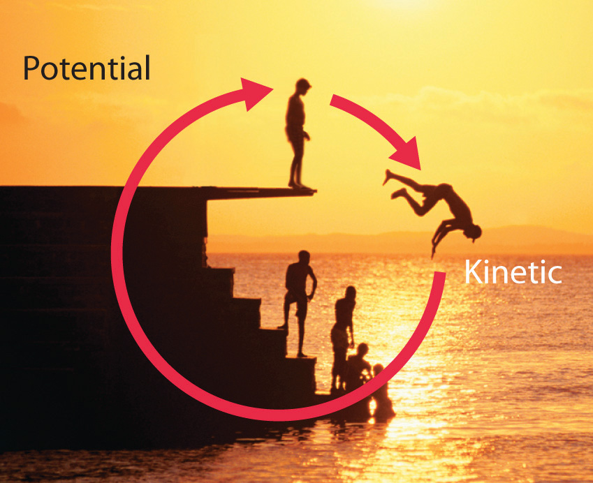
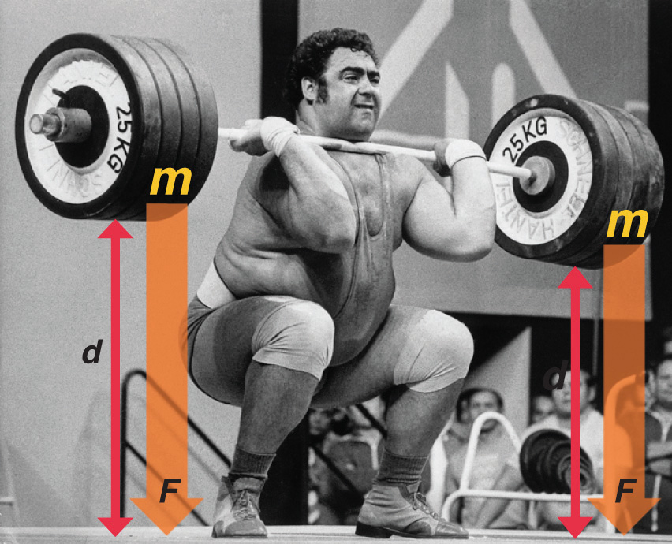
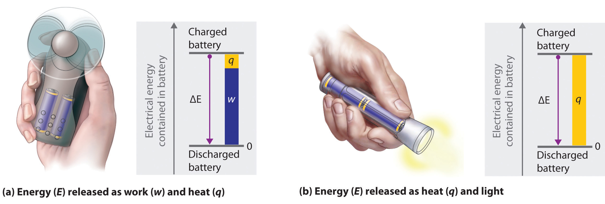

Because energy takes many forms, only some of which can be seen or felt, it is defined by its effect on matter. For example, microwave ovens produce energy to cook food, but we cannot see that energy. In contrast, we can see the energy produced by a light bulb when we switch on a lamp. In this section, we describe the forms of energy and discuss the relationship between energy, heat, and work.
The forms of energy include thermal energy, radiant energy, electrical energy, nuclear energy, and chemical energy (Figure 5.1 "Forms of Energy"). Thermal energyEnergy that results from atomic and molecular motion; the faster the motion, the higher the thermal energy. results from atomic and molecular motion; the faster the motion, the greater the thermal energy. The temperatureA measure of an object’s thermal energy content. of an object is a measure of its thermal energy content. Radiant energyOne of the five forms of energy, radiant energy is carried by light, microwaves, and radio waves (the other forms of energy are thermal, chemical, nuclear, and electrical). Objects left in bright sunshine or exposed to microwaves become warm because much of the radiant energy they absorb is converted to thermal energy. is the energy carried by light, microwaves, and radio waves. Objects left in bright sunshine or exposed to microwaves become warm because much of the radiant energy they absorb is converted to thermal energy. Electrical energyOne of the five forms of energy, electrical energy results from the flow of electrically charged particles. The other four forms of energy are radiant, thermal, chemical, and nuclear. results from the flow of electrically charged particles. When the ground and a cloud develop a separation of charge, for example, the resulting flow of electrons from one to the other produces lightning, a natural form of electrical energy. Nuclear energyOne of the five forms of energy, nuclear energy is stored in the nucleus of an atom. The other four forms of energy are radiant, thermal, chemical, and electrical. is stored in the nucleus of an atom, and chemical energyOne of the five forms of energy, chemical energy is stored within a chemical compound because of a particular arrangement of atoms. The other four forms of energy are radiant, thermal, nuclear, and electrical. is stored within a chemical compound because of a particular arrangement of atoms.
Figure 5.1 Forms of Energy

(a) Thermal energy results from atomic and molecular motion; molten steel at 2000°C has a very high thermal energy content. (b) Radiant energy (e.g., from the sun) is the energy in light, microwaves, and radio waves. (c) Lightning is an example of electrical energy, which is due to the flow of electrically charged particles. (d) Nuclear energy is released when particles in the nucleus of the atom are rearranged. (e) Chemical energy results from the particular arrangement of atoms in a chemical compound; the heat and light produced in this reaction are due to energy released during the breaking and reforming of chemical bonds.
Electrical energy, nuclear energy, and chemical energy are different forms of potential energy (PE)Energy stored in an object because of its relative position or orientation., which is energy stored in an object because of the relative positions or orientations of its components. A brick lying on the windowsill of a 10th-floor office has a great deal of potential energy, but until its position changes by falling, the energy is contained. In contrast, kinetic energy (KE)Energy due to the motion of an object: where is the mass of the object and is its velocity. is energy due to the motion of an object. When the brick falls, its potential energy is transformed to kinetic energy, which is then transferred to the object on the ground that it strikes. The electrostatic attraction between oppositely charged particles is a form of potential energy, which is converted to kinetic energy when the charged particles move toward each other.
Energy can be converted from one form to another (Figure 5.2 "Interconversion of Forms of Energy") or, as we saw with the brick, transferred from one object to another. For example, when you climb a ladder to a high diving board, your body uses chemical energy produced by the combustion of organic molecules. As you climb, the chemical energy is converted to mechanical work to overcome the force of gravity. When you stand on the end of the diving board, your potential energy is greater than it was before you climbed the ladder: the greater the distance from the water, the greater the potential energy. When you then dive into the water, your potential energy is converted to kinetic energy as you fall, and when you hit the surface, some of that energy is transferred to the water, causing it to splash into the air. Chemical energy can also be converted to radiant energy; one common example is the light emitted by fireflies, which is produced from a chemical reaction.
Figure 5.2 Interconversion of Forms of Energy
When a swimmer steps off the platform to dive into the water, potential energy is converted to kinetic energy. As the swimmer climbs back up to the top of the diving platform, chemical energy is converted to mechanical work.
Although energy can be converted from one form to another, the total amount of energy in the universe remains constant. This is known as the law of conservation of energyThe total amount of energy in the universe remains constant. Energy can be neither created nor destroyed, but it can be converted from one form to another..As you will learn in Chapter 18 "Chemical Thermodynamics", the law of conservation of energy is also known as the first law of thermodynamics. Energy cannot be created or destroyed.
One definition of energyThe capacity to do work. is the capacity to do work. The easiest form of work to visualize is mechanical workThe energy required to move an object a distance when opposed by a force : (Figure 5.3 "An Example of Mechanical Work"), which is the energy required to move an object a distance d when opposed by a force F, such as gravity:
Equation 5.1
Because the force (F) that opposes the action is equal to the mass (m) of the object times its acceleration (a), we can also write Equation 5.1 as follows:Recall from Chapter 1 "Introduction to Chemistry" that weight is a force caused by the gravitational attraction between two masses, such as you and Earth.
Equation 5.2
Figure 5.3 An Example of Mechanical Work
One form of energy is mechanical work, the energy required to move an object of mass m a distance d when opposed by a force F, such as gravity.
Consider the mechanical work required for you to travel from the first floor of a building to the second. Whether you take an elevator or an escalator, trudge upstairs, or leap up the stairs two at a time, energy is expended to overcome the force of gravity. The amount of work done (w) and thus the energy required depends on three things: (1) the height of the second floor (the distance d); (2) your mass, which must be raised that distance against the downward acceleration due to gravity; and (3) your path, as you will learn in Section 5.2 "Enthalpy".
In contrast, heat (q)Thermal energy that can be transformed from an object at one temperature to an object at another temperature. is thermal energy that can be transferred from an object at one temperature to an object at another temperature. The net transfer of thermal energy stops when the two objects reach the same temperature.
The energy of an object can be changed only by the transfer of energy to or from another object in the form of heat,As you will learn in Chapter 6 "The Structure of Atoms", hot objects can also lose energy as radiant energy, such as heat or light. This energy is converted to heat when it is absorbed by another object. Hence radiant energy is equivalent to heat. work performed on or by the object, or some combination of heat and work. Consider, for example, the energy stored in a fully charged battery. As shown in Figure 5.4 "Energy Transfer", this energy can be used primarily to perform work (e.g., running an electric fan) or to generate light and heat (e.g., illuminating a light bulb). When the battery is fully discharged in either case, the total change in energy is the same, even though the fraction released as work or heat varies greatly. The sum of the heat produced and the work performed equals the change in energy (ΔE):
Equation 5.3
Energy can be transferred only in the form of heat, work performed on or by an object, or some combination of heat and work.
Figure 5.4 Energy Transfer
Discharging a fully charged battery releases the same amount of energy whether the battery is used to run a fan (a) or illuminate a light bulb (b). In (a), most of the energy is used to perform work, which turns the blades of the fan and thus moves the air; only a small portion of the energy is released as heat by the electric motor. In (b), all the energy is released as heat and light; no work is done.
Energy is an extensive property of matter—for example, the amount of thermal energy in an object is proportional to both its mass and its temperature. (For more information on the properties of matter, see Chapter 1 "Introduction to Chemistry".) A water heater that holds 150 L of water at 50°C contains much more thermal energy than does a 1 L pan of water at 50°C. Similarly, a bomb contains much more chemical energy than does a firecracker. We now present a more detailed description of kinetic and potential energy.
The kinetic energy of an object is related to its mass m and velocity v:
Equation 5.4
For example, the kinetic energy of a 1360 kg (approximately 3000 lb) automobile traveling at a velocity of 26.8 m/s (approximately 60 mi/h) is
Equation 5.5
Because all forms of energy can be interconverted, energy in any form can be expressed using the same units as kinetic energy. The SI unit of energy, the joule (J)The SI unit of energy: ,The joule is named after the British physicist James Joule (1818–1889), an early worker in the field of energy. is defined as 1 kilogram·meter2/second2 (kg·m2/s2). Because a joule is such a small quantity of energy, chemists usually express energy in kilojoules (1 kJ = 103 J). For example, the kinetic energy of the 1360 kg car traveling at 26.8 m/s is 4.88 × 105 J or 4.88 × 102 kJ. It is important to remember that the units of energy are the same regardless of the form of energy, whether thermal, radiant, chemical, or any other form. Because heat and work result in changes in energy, their units must also be the same.
To demonstrate, let’s calculate the potential energy of the same 1360 kg automobile if it were parked on the top level of a parking garage 36.6 m (120 ft) high. Its potential energy is equivalent to the amount of work required to raise the vehicle from street level to the top level of the parking garage, which is given by Equation 5.1 (w = Fd). According to Equation 5.2, the force (F) exerted by gravity on any object is equal to its mass (m, in this case, 1360 kg) times the acceleration (a) due to gravity (g, 9.81 m/s2 at Earth’s surface). The distance (d) is the height (h) above street level (in this case, 36.6 m). Thus the potential energy of the car is as follows:
Equation 5.6

The units of potential energy are the same as the units of kinetic energy. Notice that in this case the potential energy of the stationary automobile at the top of a 36.6 m high parking garage is the same as its kinetic energy at 60 mi/h. If the vehicle fell from the roof of the parking garage, its potential energy would be converted to kinetic energy, and it is reasonable to infer that the vehicle would be traveling at 60 mi/h just before it hit the ground, neglecting air resistance. After the car hit the ground, its potential and kinetic energy would both be zero.
Potential energy is usually defined relative to an arbitrary standard position (in this case, the street was assigned an elevation of zero). As a result, we usually calculate only differences in potential energy: in this case, the difference between the potential energy of the car on the top level of the parking garage and the potential energy of the same car on the street at the base of the garage.
A recent and spectacular example of the conversion of potential energy to kinetic energy was seen by the earthquake near the east coast of Honshu, Japan, on March 11, 2011. The magnitude 9.0 earthquake occurred along the Japan Trench subduction zone, the interface boundary between the Pacific and North American geological plates. During its westward movement, the Pacific plate became trapped under the North American plate, and its further movement was prevented. When there was sufficient potential energy to allow the Pacific plate to break free, approximately 7.1 × 1015 kJ of potential energy was released as kinetic energy, the equivalent of 4.75 × 108 tn of TNT (trinitrotoluene) or 25,003 nuclear bombs. The island of Japan experienced the worst devastation in its history from the earthquake, resulting tsunami, and aftershocks. Historical records indicate that an earthquake of such force occurs in some region of the globe approximately every 1000 years. One such earthquake and resulting tsunami is speculated to have caused the destruction of the lost city of Atlantis, referred to by the ancient Greek philosopher Plato.
The units of energy are the same for all forms of energy.
Energy can also be expressed in the non-SI units of calories (cal)A non-SI unit of energy: 1 cal = 4.184 J exactly., where 1 cal was originally defined as the amount of energy needed to raise the temperature of exactly 1 g of water from 14.5°C to 15.5°C.We specify the exact temperatures because the amount of energy needed to raise the temperature of 1 g of water 1°C varies slightly with elevation. To three significant figures, however, this amount is 1.00 cal over the temperature range 0°C–100°C. The name is derived from the Latin calor, meaning “heat.” Although energy may be expressed as either calories or joules, calories were defined in terms of heat, whereas joules were defined in terms of motion. Because calories and joules are both units of energy, however, the calorie is now defined in terms of the joule:
Equation 5.7
In this text, we will use the SI units—joules (J) and kilojoules (kJ)—exclusively, except when we deal with nutritional information, addressed in Section 5.4 "Thermochemistry and Nutrition".
Given: mass and velocity or height
Asked for: kinetic and potential energy
Strategy:
Use Equation 5.4 to calculate the kinetic energy and Equation 5.6 to calculate the potential energy, as appropriate.
Solution:
The kinetic energy of an object is given by In this case, we know both the mass and the velocity, but we must convert the velocity to SI units:
The kinetic energy of the baseball is therefore
The increase in potential energy is the same as the amount of work required to raise the ball to its new altitude, which is (250 − 3) = 247 feet above its initial position. Thus
Exercise
Answer:
general definition of work
Equation 5.1: w = Fd
Equation 5.2: w = mad
relationship between energy, heat, and work
Equation 5.3: ΔE = q + w
kinetic energy
potential energy in a gravitational field
Equation 5.6: PE = mgh
Thermochemistry is a branch of chemistry that qualitatively and quantitatively describes the energy changes that occur during chemical reactions. Energy is the capacity to do work. Mechanical work is the amount of energy required to move an object a given distance when opposed by a force. Thermal energy is due to the random motions of atoms, molecules, or ions in a substance. The temperature of an object is a measure of the amount of thermal energy it contains. Heat (q) is the transfer of thermal energy from a hotter object to a cooler one. Energy can take many forms; most are different varieties of potential energy (PE), energy caused by the relative position or orientation of an object. Kinetic energy (KE) is the energy an object possesses due to its motion. Energy can be converted from one form to another, but the law of conservation of energy states that energy can be neither created nor destroyed. The most common units of energy are the joule (J), defined as 1 (kg·m2)/s2, and the calorie, defined as the amount of energy needed to raise the temperature of 1 g of water by 1°C (1 cal = 4.184 J).
What is the relationship between mechanical work and energy?
Does a person with a mass of 50 kg climbing a height of 15 m do work? Explain your answer. Does that same person do work while descending a mountain?
If a person exerts a force on an immovable object, does that person do work? Explain your answer.
Explain the differences between electrical energy, nuclear energy, and chemical energy.
The chapter describes thermal energy, radiant energy, electrical energy, nuclear energy, and chemical energy. Which form(s) of energy are represented by each of the following?
Describe the various forms of energy that are interconverted when a flashlight is switched on.
Describe the forms of energy that are interconverted when the space shuttle lifts off.
Categorize each of the following as representing kinetic energy or potential energy.
Are the units for potential energy the same as the units for kinetic energy? Can an absolute value for potential energy be obtained? Explain your answer.
Categorize each of the following as representing kinetic energy or potential energy.
Why does hammering a piece of sheet metal cause the metal to heat up?
Technically, the person is not doing any work, since the object does not move.
The kinetic energy of the hammer is transferred to the metal.
Please be sure you are familiar with the topics discussed in Essential Skills 4 (Section 5.6 "Essential Skills 4") before proceeding to the Numerical Problems.
Describe the mathematical relationship between (a) the thermal energy stored in an object and that object’s mass and (b) the thermal energy stored in an object and that object’s temperature.
How much energy (in kilojoules) is released or stored when each of the following occurs?
Calculate how much energy (in kilojoules) is released or stored when each of the following occurs:
A car weighing 1438 kg falls off a bridge that is 211 ft high. Ignoring air resistance, how much energy is released when the car hits the water?
A 1 tn roller coaster filled with passengers reaches a height of 28 m before accelerating downhill. How much energy is released when the roller coaster reaches the bottom of the hill? Assume no energy is lost due to friction.
250 kJ released